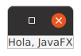
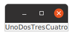
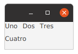

Entre otras muchas cosas, JavaFX proporciona un conjunto de nodos control, tales como botones, listas, tablas, etcétera, con los que crear GUIs.
Por su parte, los gestores de posicionamiento (nodos layout) ubican los controles dentro de la ventana, liberándonos de la tarea de hacerlo componente a componente.
Al último, tienes acceso desde la web de la biblioteca.
Gestores de posicionamiento
El más sencillo es Pane, que no tiene ninguna política de distribución de los componentes que se le añaden, símplemente los añade donde ellos se lo indican.
Pane se suele utilizar como contenedor de otros componentes y gestores de posicionamiento.
Este es un ejemplo:
Label label = new Label("Hola, JavaFX");
label.setLayoutX(100);
label.setLayoutY(250);
Pane panel = new Pane(label);
Scene scene = new Scene(panel, 400, 300);
stage.setScene(scene);
stage.show();
Label tiene su propia posición en X e Y.
Indicar la posición no suele ser buena idea, es mejor dejar que el gestor haga su trabajo.
El origen de coordenadas está en la parte superior izquierda.
Si no indicamos el tamaño inicial de la ventana, esta se ajusta para poder mostrar todos los componentes que hay en el grafo de escena.
Esta opción es la más útil, JavaFX calcula el tamaño óptimo de la ventana por nosotros.
HBox es un gestor de posicionamiento que coloca los componentes que a él se añaden en horizontal.
Label uno = new Label("Uno");
Label dos = new Label("Dos");
Label tres = new Label("Tres");
Label cuatro = new Label("Cuatro");
HBox hBox = new HBox(uno, dos, tres, cuatro);
Fíjate que el argumento del constructor de HBox admite un número variable de argumentos.
El espaciado entre los componentes que hay dentro de HBox lo podemos definir con setSpacing(double)
Label uno = new Label("Uno");
Label dos = new Label("Dos");
Label tres = new Label("Tres");
Label cuatro = new Label("Cuatro");
HBox hBox = new HBox(uno, dos, tres, cuatro);
hBox.setSpacing(10);
Para la distribución en vertical podemos usar el gestor de posicionamiento VBox:
Label uno = new Label("Uno");
Label dos = new Label("Dos");
Label tres = new Label("Tres");
Label cuatro = new Label("Cuatro");
VBox vBox = new VBox(uno, dos, tres, cuatro);
Y también puedo definir el espacio entre los componentes, y su alineamiento:
Label uno = new Label("Uno");
Label dos = new Label("Dos");
Label tres = new Label("Tres");
Label cuatro = new Label("Cuatro");
VBox vBox = new VBox(uno, dos, tres, cuatro);
vBox.setSpacing(10);
vBox.setAlignment(Pos.CENTER);
Podemos componer la escena anidando gestores dentro de gestores:
Label uno = new Label("Uno");
Label dos = new Label("Dos");
Label tres = new Label("Tres");
Label cuatro = new Label("Cuatro");
VBox vBox = new VBox(uno, dos, tres, cuatro);
vBox.setSpacing(10);
vBox.setAlignment(Pos.CENTER);
Label cinco = new Label("Cinco");
Label seis = new Label("Seis");
Label siete = new Label("Siete");
Label ocho = new Label("Ocho");
HBox hBox = new HBox(cinco, seis, siete, ocho);
hBox.setSpacing(10);
HBox composicion = new HBox(vBox, hBox);
El gestor de posicionamiento FlowPane, coloca los componentes que le añadimos de izquierda a derecha, y de arriba a abajo (sentido occidental de escritura).
Label uno = new Label("Uno");
Label dos = new Label("Dos");
Label tres = new Label("Tres");
Label cuatro = new Label("Cuatro");
FlowPane flowPane = new FlowPane(uno, dos, tres, cuatro);
flowPane.setHgap(10);
flowPane.setVgap(10);
Para dar espacio entre los componentes, utilizamos los métodos setHgap(double y setVgat(double).
La ventaja de este gestor frente a HBox es que si redimensionamos la ventana, el gesto re-coloca los elementos dentro de la ventana.
TilePane coloca un componente al lado de otro, y el tamaño reservado para cada componente es el mismo.
Label uno = new Label("Uno");
Label dos = new Label("Dos");
Label tres = new Label("Tres");
Label cuatro = new Label("Cuatro");
Label cinco = new Label("Cinco");
Label seis = new Label("Seis");
TilePane tilePane = new TilePane(uno, dos, tres, cuatro, cinco, seis);
En el caso de FlowPane el espacio reservado para cada componente depende del tamaño del componente, componentes distintos tendrán reservado un tamaño distinto.
Como en el caso de FlowPane el espacio entre componentes se fija con setHgap(double) y setVgap(double):
TilePane tilePane = new TilePane(uno, dos, tres, cuatro, cinco, seis);
tilePane.setHgap(10);
tilePane.setVgap(10);
BorderPane puede distribuir los componentes en cinco regiones: Arriba, Abajo, Izquierda, Derecha y Centro
Label arriba = new Label("Arriba");
Label abajo = new Label("Abajo");
Label izquierda = new Label("Izquierda");
Label derecha = new Label("Derecha");
Label centro = new Label("Centro");
BorderPane borderPane = new BorderPane();
borderPane.setTop(arriba);
borderPane.setBottom(abajo);
borderPane.setLeft(izquierda);
borderPane.setRight(derecha);
borderPane.setCenter(centro);
Para centrar los componentes dentro de BorderPane contamos con el BorderPane.setAlignment(), que es static
Label arriba = new Label("Arriba");
Label abajo = new Label("Abajo");
Label izquierda = new Label("Izquierda");
Label derecha = new Label("Derecha");
Label centro = new Label("Centro");
BorderPane borderPane = new BorderPane();
borderPane.setTop(arriba);
BorderPane.setAlignment(arriba, Pos.CENTER);
borderPane.setBottom(abajo);
BorderPane.setAlignment(abajo, Pos.CENTER);
borderPane.setLeft(izquierda);
BorderPane.setAlignment(izquierda, Pos.CENTER);
borderPane.setRight(derecha);
BorderPane.setAlignment(derecha, Pos.CENTER);
borderPane.setCenter(centro);
Como ya sabemos, podemos anidar nodos gestores de posicionamiento dentro de otros nodos gestores de posicionamiento para componer el aspecto que nosotros queremos:
Label uno = new Label("Uno");
Label dos = new Label("Dos");
Label tres = new Label("Tres");
VBox vBox = new VBox(uno, dos, tres);
vBox.setAlignment(Pos.CENTER);
BorderPane borderPane = new BorderPane();
borderPane.setTop(vBox);
// Continua
Con GridPane podemos colocar los componentes dentro de una rejilla, indicando cuantas celdas ocupa cada componente, y dejando, incluso, algunas celdas sin rellenar.
GridPane gridPane = new GridPane();
Label uno = new Label("Uno");
Label dos = new Label("Dos");
Label tres = new Label("Tres");
gridPane.add(uno, 0, 0, 1, 1);
gridPane.add(dos, 1, 1, 1,1 );
gridPane.add(tres,0, 5, 3, 1);
Se pueden crear interfaces muy chulas.
Text usuario = new Text("Usuario");
Text contrasena = new Text("Contraseña");
TextField tfUsuario = new TextField();
TextField tfContrasena = new TextField();
Button enviar = new Button("Enviar");
Button borrar = new Button("Borrar");
GridPane gridPane = new GridPane();
gridPane.setPadding(new Insets(10, 10, 10, 10));
gridPane.setVgap(5);
gridPane.setHgap(5);
gridPane.setAlignment(Pos.CENTER);
gridPane.add(usuario, 0, 0);
gridPane.add(tfUsuario, 1, 0);
gridPane.add(contrasena, 0, 1);
gridPane.add(tfContrasena, 1, 1);
gridPane.add(enviar, 0, 2);
gridPane.add(borrar, 1, 2);
Los gestores de posicionamiento nos ayudan con la tarea de organizar los distintos componentes de nuestra interfaz gráfica.
Cada gestor de posicionamiento coloca los componentes dentro de él de una manera predeterminada. Hay que conocerlos para saber cuál se adapta mejor a nuestras necesidades.
Siempre puedes colocar componentes dentro de componentes, para conseguir el aspecto deseado para tu aplicación.
Las clases de los gestores ofrecen una enorme cantidad de métodos. A medida que vayas programando irás conociéndolos.